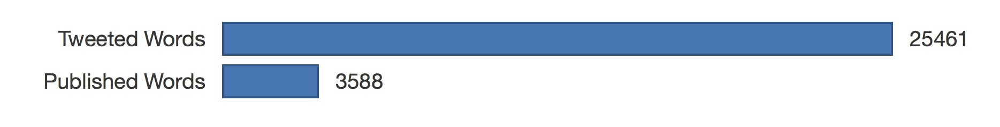
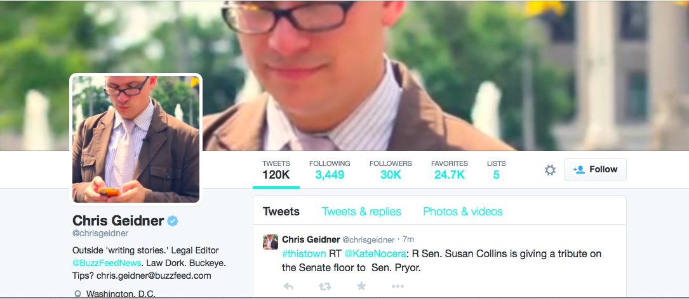

What does it take to be heard at the buzziest media company of the social age? A hyperactive Twitter feed and maybe a bit of writing.
Buzzfeed journalists tweet more than they write. But who can blame them? At their offices in New York, nerve center of cat videos and listicles, in-house data scientists track every piece of content while staff writers vie for the top ranks on a digital scoreboard. In a recent survey of leading print and web news outlets, 6 of the top 10 tweeting journalists came from Buzzfeed, despite it being the second smallest organization.
Josh Sternberg of Digiday put the number at 100 fulltime editorial staff, churning out 373 pieces of editorial content per day. Between them, they generate 6.4 million page views daily, helped by tweeting up a storm on their personal accounts. Oftentimes, these are links to their stories, but they could also be live commentary on hot news topics or viral minutiae. Here are ten of the buzziest journalists at Buzzfeed. (As everyone there is encouraged to write, we monitored the activity of both writers and editors.)
0.6 tweeted words per published word |
You might expect a barrage of play-by-play Scandal updates from the entertainment editorial director, but Lacob doesn't really live-tweet. Instead, he interacts with readers and other writers, his timeline mainly comprised of responses both solicited and unsolicited. The genuine engagement seems to be working. So far, he has 5 thousand more followers than the No. 1 tweeter. Of all the journalists in the top ten, he's actually the most prolific in both mediums, with more than 30,000 words for both tweets and articles. Adept in newswriting for the Internet, he transferred over from Daily Beast and prior to that, founded his own TV criticism site Televisionary.
1 tweeted word per published word |
Senior Editor for Entertainment Kelley Carter uses Twitter mostly as a personal medium, if the number of Happy Birthday tweets on her feed is any indication. Half of her activity is comprised of retweets, either of memes, reader comments or posts by other journalists from Buzzfeed. This is a great example of how to stay social without letting the medium take over every waking second of your life.
1.6 tweeted words per published word |
Conz Preti tweets from Brooklyn for Buzzfeed Espanol, the organization's dedicated vertical for Hispanic audiences. A bilingual tweeter and writer, she is able to engage 17,000 followers (more than double the number of say, an entertainment editor like Carter), proof that Buzzfeed thrives on the patronage of clusters of well-defined communities. If you don't believe that, just have a look at their listicles. Read: 14 Things People With Tongue Piercings Are Tired Of Hearing. It's all about finding your audience.
3.9 tweeted words per published word |
Senior National Reporter Joel Anderson maintains a feed that's practically a newswire, Buzzfeed style. Tweeting every 10-15 minutes, he breaks up his news coverage with quips on pop culture and status updates about what he's listening to on Spotify. Despite having a lot of articles to his name, he still tweets thrice as more as he writes. Satisfying the needs of youth who only get their news from Twitter, Anderson is a content machine.
3.6 tweeted words per published word |
Political reporter Andrew Kaczynski wins the Best in Multimedia Award, what with his constant Twitpics of everything from an avalanche of animal costumes at a Fur Suit convention (strange, but true) to screen caps of articles by his fellow Buzzfeed staffers. According to Social Media Editor at Wall Street Journal, Rubina Fillion, tweets with photos gain more clicks, favorites or retweets, as people tend to engage more with images. It definitely seems to be working for Kaczynski, who has a whopping 115,000 followers.
1.2 tweeted words per published word |
Occupying the middle of the range, Editor-In-Chief Ben Smith strikes the perfect balance between socially connected and journalistically inclined. In fact, he has about one published word for every word he tweets. His feed is split evenly between original tweets and retweets, seeming to say that he cares both about engaging the community as leading it. It is perhaps because of this personal web savvy, demonstrated even in his prior post as a blogger on Politico, that Smith is the perfect man for the job. It comes so naturally to him that on his bio, he says "Beats working for a living."
30 tweeted words per published word |
Buzzfeed's LGBT Editor is so popular for his smart takes on the lesbian, gay, bi and transgender community that he recently graced the cover of the gay culture magazine, Hello Mr.. Calling himself the "Shade Queen," he likes to dish on issues of discrimination, from the Olympics to media slurs, although on the site, he writes very little (30 times less than he tweets!), focusing more on his editing work. Reading his tweets, though, shows off his capabilities as a writer. For one, who likes to set up scenes in his tweets, a deftness with 140 characters that may have developed from his personal love of poetry.
7 tweeted words per published word |
Michael Rusch aka @weeddude was named one of Time's 140 Best Twitter Feeds of 2013. Following him feels like watching the 5 o'clock news, all day, every day, complete with pictures of burning buildings or screenshots of press releases from the government. If he tweets 7 times more than he writes, that's because, as News and Social Editor for Buzzfeed, it's really his job to churn out content on the social medium.
|  |
1.8 tweeted words per published word |
With the title of Legal Editor for Buzzfeed News, it might seem that Chris Geidner is a one-man Standards Committee, checking copy to make sure it's safe against lawsuits. Instead, Buzzfeed's man in Washington is a self-professed "law dork" who churned out the second highest number of words of published content, while still actively tweeting. Covering government and politics, his insightful analysis makes a case for the seriousness of Buzzfeed News, in stark contrast to the famously fluffy continent on its "Buzz" vertical.
19 tweeted words per published word |
The most prolific tweeter on Buzzfeed, Clayton oozes with attitude, whether it's her profile pic, screen name (@brokeymcpoverty) or tweets ("just reported someone as spam bc of their abuse of commas. i aint got time."") In the 10 weeks it took her to churn out 3200 tweets, she wrote 10 articles, or one article per week. While that may seem plausible for a long-form writer, Clayton only writes listicles, a viral little genre, which the site practically invented. The fact that a writer can maintain a job at Buzzfeed with this much throughput is a testament to how much they value engagement on social media. If their writers aren't writing as much as they're tweeting, their readers are also not reading as much as they are looking for something to entertain them. Reached for comment about her No. 1 status (note: she actually bested all other journalists we'd tracked in terms of number of tweets, from other print and web publications), Clayton did not respond. Perhaps she was too busy tweeting.